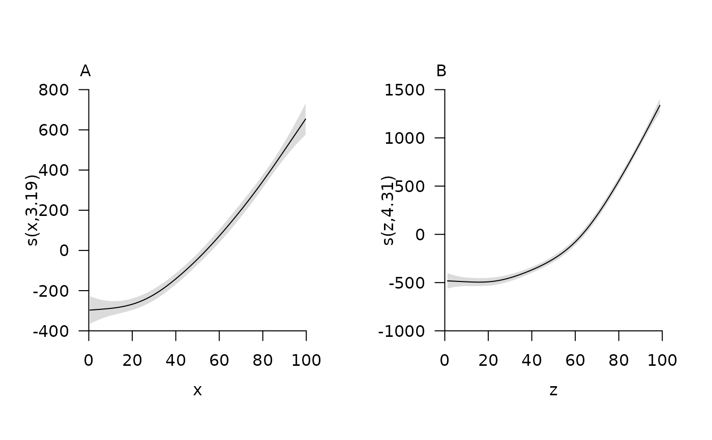
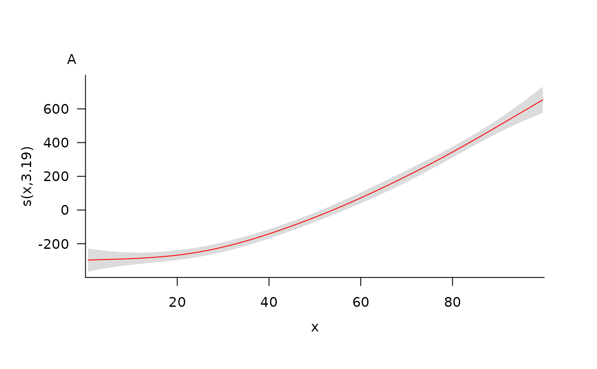
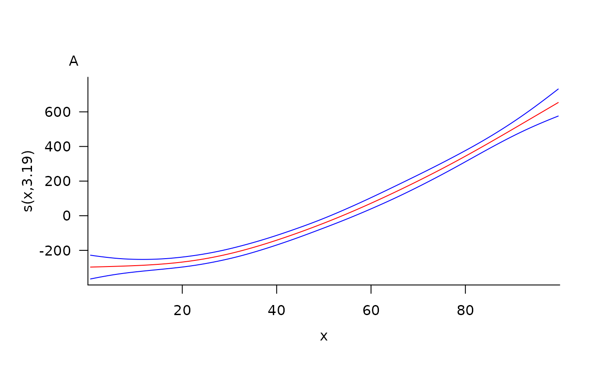
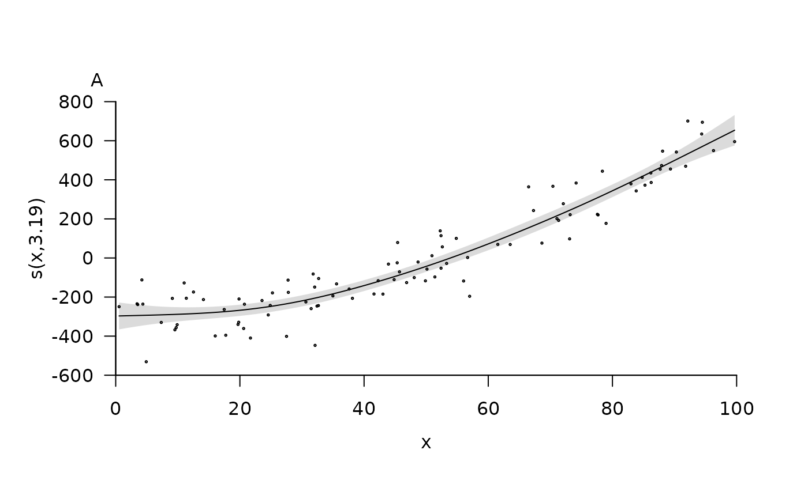
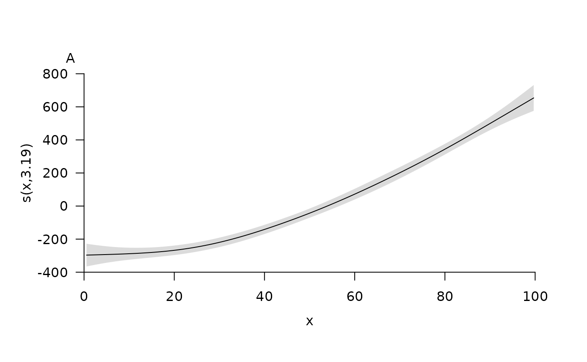

This function is designed to plot prettier versions of one dimensional smooths created by plot.gam. For each smooth, the necessary information for plotting is taken from a user-supplied list generated by plot.gam. Plots are created using pretty_plot. Confidence intervals can be added via an internal call to add_error_envelope. Partial residuals and a rug for the observed values can also be added and customised.
pretty_smooth_1d(
fit,
shift = 0,
select = 1,
add_fit = list(),
add_se_type = "poly",
add_se = list(col = scales::alpha("lightgrey", 0.8), border = FALSE),
add_resid = NULL,
add_rug = NULL,
xlim = NULL,
ylim = NULL,
pretty_axis_args = list(),
add_xlab = list(line = 2),
add_ylab = list(line = 2),
assign_main = TRUE,
add_main = list(adj = 0),
one_page = TRUE,
return_list = NULL,
...
)A list returned by plot.gam. Each element is a list which contains all the necessary information to recreate a plot for a specific model term.
A number which defines a value by which to shift model predictions/partial residuals vertically.
An integer that specifies the smooth term(s) (i.e., the elements in fit) to be plotted.
(optional) A named list of arguments to customise the appearance of the fitted line. This is passed to lines or the add_fit argument of add_error_envelope.
(optional) A character that defines the method by which CIs are added to the plot: as lines ("lines") or as a shaded polygon ("poly"). This is passed to the type argument of add_error_envelope.
(optional) A named list of arguments to customise the appearance of the confidence intervals. This is passed to the add_ci argument of add_error_envelope.
(optional) A named list of arguments to customise the appearance of partial residuals via points. These are taken from the 'p.resid' elements in fit.
(optional) A named list of arguments to add a rug of observed values to the plot. Observed values are taken from the 'raw' elements in fit. This is passed to rug.
Axis limits for all plots. If NULL, axis limits are chosen according to the inputs to pretty_axis_args.
A named list of arguments, passed to pretty_axis to customise axes.
(optional) Named list of arguments to customise the x and y axis labels. Labels are taken from the 'xlab' and 'ylab' elements in fit respectively. Lists are passed to mtext.
(optional) A logical input that defines whether or not to assign a title to the plot. If TRUE, each plot (i)'s title is given by LETTERS[1:length(select)][i].
(optional) A named list of arguments to customise plot titles. Labels are assigned (see assign_main) or taken from the 'main' elements in fit. This is passed to mtext.
A logical input that defines whether or not to plot all smooths on one page.
(depreciated) A logical input which defines whether or not to return a list, with one element for each select value, each containing the named list of axis arguments from pretty_axis.
Additional arguments (none implemented).
The function returns a pretty plot of one dimensional smooths(s) and, invisibly, the list of pretty axis parameters produced by pretty_axis.
For all add_* arguments, add_* = NULL suppresses the argument, add_* = list() implements the argument with default values and a named list customises the output.
#### Simulate some example data and fit an example model
n <- 100
x <- runif(n, 0, 100)
z <- runif(n, 0, 100)
y <- 0.1 * x^2 + 0.002 * z^3 + stats::rnorm(n, 0, 100)
mod <- mgcv::gam(y ~ s(x) + s(z))
fit <- mgcv::plot.gam(mod, residuals = TRUE, pages = 1)
#### pretty_smooth_1d() implementation
# The default options
pretty_smooth_1d(fit)
#> Warning: The following argument(s) are depreciated: 'fitted_gp'.
# The number of smooth terms is controlled via select
# ... and can be plotted on one page via one_page
pretty_smooth_1d(fit, select = 1:2, one_page = TRUE)
#> Warning: The following argument(s) are depreciated: 'fitted_gp'.
#> Warning: The following argument(s) are depreciated: 'fitted_gp'.

# The fitted line can be controlled via add_fit
pretty_smooth_1d(fit, add_fit = list(col = "red"))
#> Warning: The following argument(s) are depreciated: 'fitted_gp'.
# Confidence intervals can be suppressed via add_se_type = NULL or
# ... controlled via add_se and
pretty_smooth_1d(fit, add_fit = list(col = "red"), add_se = NULL)
#> Warning: The following argument(s) are depreciated: 'fitted_gp'.

pretty_smooth_1d(fit,
add_fit = list(col = "red"),
add_se_type = "lines",
add_se = list(col = "blue"))
#> Warning: The following argument(s) are depreciated: 'fitted_gp'.

# Partial residuals can be added via add_resid
pretty_smooth_1d(fit, add_resid = list(cex = 0.25))
#> Warning: The following argument(s) are depreciated: 'fitted_gp'.

# A rug can be added/surpressed via add_rug
pretty_smooth_1d(fit, add_rug = NULL)
#> Warning: The following argument(s) are depreciated: 'fitted_gp'.

pretty_smooth_1d(fit, add_rug = list(ticksize = 0.01))
#> Warning: The following argument(s) are depreciated: 'fitted_gp'.
# Axis titles can be controlled via add_xlab, add_ylab and add_main
pretty_smooth_1d(fit, add_main = list(cex = 2))
#> Warning: The following argument(s) are depreciated: 'fitted_gp'.
# Axis titles are taken from the fitted object, so can be changed
# ... by changing the appropriate element in 'fit'
fit[[1]]$xlab <- "Updated x name"
pretty_smooth_1d(fit, add_main = list(cex = 2))
#> Warning: The following argument(s) are depreciated: 'fitted_gp'.